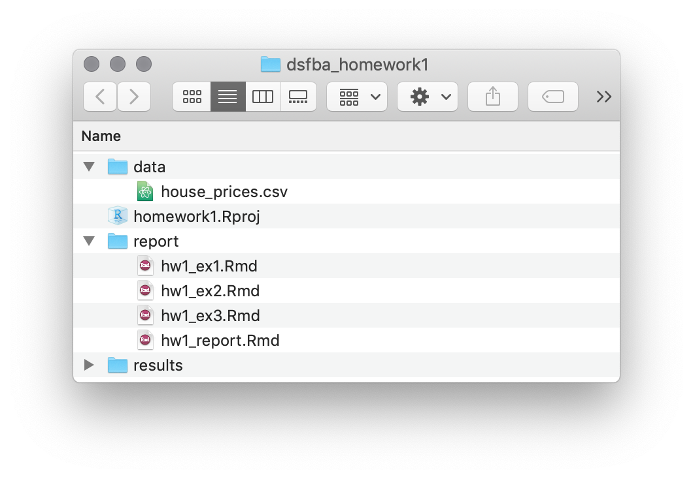

Revise writing report using RMarkdown


Download the HW1 skeleton files. To successfully complete the first assignment you will have to do the following:
homework1.Rproj.HW1_report.Rmd = hw1_ex1.Rmd + hw1_ex2.Rmd + hw1_ex3.Rmd.hw1_ex1.Rmd, hw1_ex2.Rmd and hw1_ex3.Rmd.To obtain the maximum number of points, use whenever possible:
%>%,dplyr verbs (see below),kable to print tables,ggplot to produce the figures.| verb | description | |
|---|---|---|
select() |
select columns | |
filter() |
filter rows | |
arrange() |
re-order or arrange rows | |
mutate() |
create new columns | |
summarise() |
summarise values | |
group_by() |
group operations |
Once you’re environment is set up, you’re ready to get your hands dirty with some data manipulation. Following the instructions provided in “R workflow and RMarkdown”, you should be able to solve the following assignments:
Begin by writing your code in the corresponding code chuncks in hw1_ex1.Rmd,
hw1_ex2.Rmd and hw1_ex3.Rmd. When you finish the three exercises, use Knitr to render the
full report HW1_report.Rmd.
Don’t forget to save your files and keep them ready and clean for the next session.
* Connecting to remote repository
To submit your homework you should connect to your assigned repository. If you need some help, follow the instructions on this link, Section: Clone an existing GitHub project to new RStudio project.
Project Setup ‘homework1.Rproj’
Use the files provided in dsfba_homework1.zip to structure your project in the following way (you should create subdirectories by yourselves):

1.a Install the tidyverse and knitr.
1.b Load the tidyverse and knitr.
kable column).